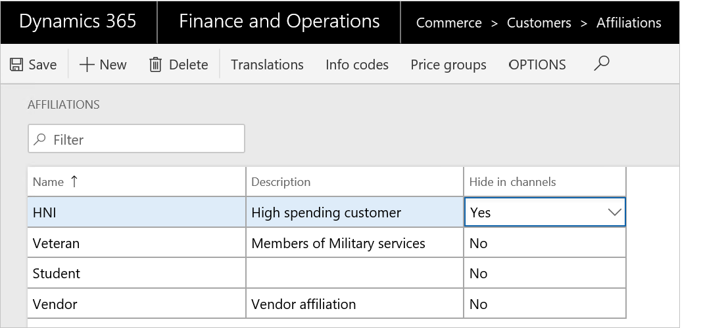

Überblick über die Loyalität
Important
Dynamics 365 Retail ist jetzt Dynamics 365 Commerce und bietet umfassende Handelsfunktionen für alle Kanäle – von E-Commerce über Shops bis hin zu Callcentern. Weitere Informationen zu diesen Änderungen finden Sie unter Microsoft Dynamics 365 Commerce.
Ein Treueprogramm kann dazu beitragen, die Kundenloyalität durch die Belohnung der Kunden für das Kaufen von Produkte der Marke des Einzelhandelsgeschäfts zu erhöhen. In Dynamics 365 Commerce können Sie einfache oder komplexe Treueprogramme einrichten, die für alle juristischen Personen in einem beliebigen Commerce-Kanal gelten. In diesem Thema werden die Treuefunktionen innerhalb von Commerce und die damit verbundenen entsprechenden Einrichtungsschritte behandelt, damit Einzelhändler einfach mit ihrem Treueprogramm anfangen können.
Sie können Ihr Treueprogramm so einrichten, dass es die folgenden Optionen enthält.
- Richten Sie die mehrere Arten von Belohnungen ein, die Sie in den Treueprogrammen anbieten, und verfolgen Sie Teilnahme an den Treueprogrammen.
- Richten Sie Treueprogramme ein, das die verschiedenen Belohnungsanreize abbildet, die Sie anbieten. Sie können Treueprogrammstufen einrichten, um den Debitoren größere Anreize und Belohnungen anzubieten, die häufig einkaufen oder mehr Geld in Ihren Shops ausgeben.
- Definieren Sie Einnahmenregeln, um die Aktivitäten zu identifizieren, die ein Debitor ausführen muss, um Belohnungen zu erhalten. Sie können auch Tilgungsregeln festlegen, um zu identifizieren, wann und wie ein Debitor Belohnungen einlösen kann.
- Geben Sie Treuekarten von einem beliebigen Kanal aus, der an Ihren Treueprogrammen teilnimmt, und verknüpfen Sie Treuekarten zu einem oder mehreren Treueprogrammen, an denen der Kunde teilnehmen kann. Sie können eines Debitorendatensatzes für eine Treuekarte auch verknüpfen, sodass der Debitor Treuepunkte von mehreren Karten zusammenlegen und sie einlösen kann.
- Passen Sie Treuekarten manuell an oder übertragen Sie den Treuebelohnungssaldo von einer Karte auf eine andere, um einem Debitor entgegenzukommen oder um ihn zu belohnen.
Einrichten von Treueprogrammen
Sie müssen mehrere Komponenten einrichten, um die Treuefunktion in Commerce zu aktivieren. Das folgende Diagramm zeigt die Treuekomponenten und wie diese zueinander in Beziehung stehen.

Treuekomponenten
In der folgenden Tabelle werden die einzelnen Komponenten beschrieben und wo sie in der Treueeinrichtung verwendet werden.
| Bestandteil | Beschreibung | Wo sie verwendet werden |
|---|---|---|
| Einrichten von Rabatten (Komponente) | Richten Sie die Rabatte ein, die Sie den Debitoren mit Kundentreue anbieten. Beispielsweise können Sie 5 Prozent auf alle Bekleidungsprodukte anbieten. | Rabatte müssen zu den Preisgruppen hinzugefügt werden, bevor Sie in ein Treueprogramm einbezogen werden. Preisgruppen werden den Treueprogrammen und Treuestufen zugewiesen. |
| Einrichten von Preisgruppen (Komponente) | Preisgruppen werden verwendet, um Preise und Rabatte für Produkte zu erstellen und zu verwalten. Richten Sie die Preisgruppen ein, die die Rabatte umfassen, die für Treueprogramme gelten. | Preisgruppen werden Ihren Treueprogrammen und Treuestufen zugewiesen. |
| Einrichten von Kanälen (Komponente) | Commerce-Kanäle sind Shops, die an Ihren Treueprogrammen teilnehmen, wie physische Shops, Onlineshops oder Callcenter. Sie müssen Ihre Kanäle einrichten, bevor Sie ihnen Treueprogramme zuweisen können. | Sie weisen Kanäle einem Treueprogramm zu, wenn der Kanal am Treueprogramm teilnimmt. |
| Einrichten von Treuezahlungsmethoden (Komponente) | Um sicherzustellen, dass die Treuepunkte in jedem Kanal eingelöst werden können, z. B. in physischen Läden, Onlinegeschäften oder Callcentern, müssen Sie den Lagerfachbereich für die Treuekarten auf der Seite Kartennummern einrichten. | Richten Sie eine Treuezahlungsmethode ein, und weisen Sie anschließend die Treuezahlungsmethode den Kanälen zu, die am Treueprogramm teilnehmen. |
| Einrichten von Datumsintervallen | Datumsintervalle bieten eine flexible Methode, um die Dauer festzulegen, die für Treuestufen gilt. Verwenden Sie Datumsintervalle, um anzugeben, wie lange ein Debitor auf einer Stufe bleiben kann, oder wie lange ein Debitor eine Aktivität ausführen muss, um sich für eine Stufe zu qualifizieren. | Datumsintervalle gelten nur, wenn Sie Stufen in Ihren Treueprogrammen verwenden. Sie wählen das Datumsintervall aus, das für Programmstufen gilt, und auch die Datumsintervalle, die auf Programmstufenregeln zutreffen. |
| Einrichten von Belohnungspunkten | Belohnungspunkte sind die Arten von Belohnung, die Sie den Debitoren anbieten. Belohnungspunkte können einlösbar oder nicht einlösbar sein. Einlösbare Belohnungspunkte können gegen Produkte eingetauscht werden. Nicht einlösbare Belohnungspunkte werden für Nachverfolgungszwecke verwendet oder um einen Debitor in die nächste Stufe in einem Treueprogramm anzuheben. | Belohnungspunkte werden in Stufenregeln referenziert und werden verwendet, um einen Debitor für eine bestimmte Stufe zu qualifizieren. Belohnungspunkte werden auch in Treueschemas in den Einnahme- und Tilgungsregeln referenziert. In den Einnahmeregeln geben Sie die Belohnungen an, die ein Debitor für eine bestimmte Aktivität erhalten kann. In den Tilgungsregeln geben Sie die Belohnung an, die der Debitor einlösen kann. |
| Einrichten von Treueprogrammen | Treueprogramme sind die Kerntreueentität, die Sie anbieten. Jedes Treueprogramm kann Treuestufen haben, die ihm zugewiesen sind. Rabatte und Preisgruppen werden den Treueprogrammen entweder auf Programmebene oder auf Treuestufenebene zugeordnet. | Sie erstellen Treueschemas für Ihre Treueprogramme. Sie weisen Treuekarten Ihren Treueprogrammen zu, und Treuekarten können einem Debitor zugewiesen werden. Kanäle nehmen an den Treueprogrammen teil, die den Treueschemas zugewiesen sind. Jeder Debitor, der eine Treuekarte besitzt, kann an den Treueprogrammen teilnehmen, die der Karte zugewiesen sind. |
| Einrichten von Treuestufen und Stufenregeln | Treuestufen sind optionale Ebenen, die Sie für Ihre Treueprogramme definieren können. Sie können Basisrabatte und Belohnungen für alle Debitoren einrichten, die am Treueprogramm teilnehmen, und Sie können zusätzliche Rabatte und Belohnungen für Debitoren einrichten, die die verschiedenen Stufen im Programm erklimmen. Für jede Treuestufe, die Sie definieren, können Sie die Regeln einrichten, die einen Debitor für jede Stufe qualifizieren. Sie können auch festlegen, wie lange Debitoren in dieser Stufe bleiben können, nachdem sie erreicht wurde. | Treuestufen und Treuestufenregeln werden in den Treueprogrammen definiert. Wenn Sie keine Treuestufen definieren, qualifizieren sich alle Debitoren, die am Treueprogramm teilnehmen, für die Rabatte, die Sie in der Treueprogrammpreisgruppe zuweisen. Wenn Sie Treuestufen definieren, können Sie Einnahmeregeln und Tilgungsregeln für die Treuestufen im Treueschema einrichten. |
| Einrichten von Treueschemas | Treueschemas geben die Einnahmeregeln und Tilgungsregeln an, die für ein ausgewähltes Treueprogramm gelten. Sie weisen Kanäle einem Treueschema zu, um festzulegen, welches Treueprogramm, welche Einnahmeregeln und Tilgungsregeln für einen Shop gelten. | Ein Treueschema wird einem Treueprogramm und Kanälen zugewiesen. Sie können viele Treueschemas dem gleichen Treueprogramm zuweisen, und Sie können viele Treueschemas vielen Kanälen zuweisen. |
| Einrichten von Treuekarten | Eine Treuekarte berechtigt den Karteninhaber zur Teilnahme an den Treueprogrammen, die der Karte zugewiesen sind. Treuekarten können anonym ausgestellt werden, oder sie können einem bestimmten Debitor zugewiesen werden. Sie können die Treuebuchungen für eine bestimmte Karte anzeigen, und Sie können eine Zusammenfassung von Treuepunkten anzeigen, die auf der Karte angesammelt wurden. Sie können Treuekarten von einem beliebigen Kanal ausgeben. Sie können eine Treuekarte auch manuell anpassen, um den Debitor in eine andere Stufe hochzustufen, Treuepunkte hinzufügen oder den Treuepunktsaldo von einer Karte auf eine andere übertragen. | Sie weisen Treueprogramme zu einer Treuekarte zu. |
Treueprozesse
In der folgenden Tabelle werden die Prozesse beschreiben, die ausgeführt werden müssen, um die Loyalitätskonfigurationen und -Daten an Ihre Shops zu senden, und die Treuebuchungen von Ihren Shops abzurufen.
| Prozessname | Beschreibung | Seitenname |
|---|---|---|
| 1050 (Treueinformationen) | Führen Sie diesen Prozess aus, um die Treuedaten von Commerce an die Shops zu senden. Es wird empfohlen, diesen Vorgang für eine regelmäßige Ausführung zu planen, damit Loyalitätsdaten an allen Filialen gesendet werden. | Vertriebsplan |
| Treueschemas verarbeiten | Führen Sie diesen Prozess aus, um Treueschemas den Kanälen zuzuordnen, denen das Treueschema zugewiesen ist. Dieser Vorgang kann so geplant werden, dass er als Stapelverarbeitungsvorgang ausgeführt wird. Sie müssen diesen Prozess ausführen, wenn Sie die Loyalitätskonfigurationsdaten (z. B. Treueschemas, Treueprogramme oder Treuebelohnungspunkte) ändern. | Treueschemas verarbeiten |
| Verdiente Treuepunkte in Batches buchen | Führen Sie diesen Prozess aus, um Treuekarten zu aktualisieren, damit sie Transaktionen einbeziehen, die offline verarbeitet wurden. Dieser Prozess gilt nur, wenn das Kontrollkästchen Verdiente Punkte in Batches buchen auf der Seite Freigegebene Commerce-Parameter aktiviert ist, damit Belohnungen offline erworben werden können. | Verdiente Treuepunkte in Batches buchen |
| Treuekartenebenen aktualisieren | Führen Sie diesen Prozess aus, um die Einnahmenaktivität des Debitors mit den Stufenregeln für ein Treueprogramm zu vergleichen und um den Stufenstatus des Debitors zu aktualisieren. Dieser Prozess ist nur erforderlich, wenn Sie die Stufenregeln in den Treueprogrammen ändern und wenn Sie die aktualisierten Regeln rückwirkend auf die Treuekarten anwenden möchten, die bereits ausgestellt wurden. Dieser Prozess kann für einzelne Karten als Stapelverarbeitungsvorgang ausgeführt werden. | Treuekartenebenen aktualisieren |
Loyalitätsfähigkeiten
Mithilfe der mit dem Treueprogramm und den Treueebenen verbundenen Preisgruppen können Einzelhändler problemlos Sonderpreise und Rabatte für Treue-Mitglieder erstellen.
Im Rahmen eines Treueschemas in früheren Versionen können Einzelhändler die verschiedenen Einnahme- und Tilgungsregeln definieren, um die Belohnungen für Debitoren auf verschiedenen Ebenen zu unterscheiden. Einzelhändler können nun Zuordnungen als Teil der Einnahme- und Einlösungsregeln einbeziehen, damit bestimmte Debitorengruppen Teil der vorhandenen Ebenen werden, jedoch unterschiedlich vergütet werden. Dies verhindert die Anforderung, zusätzliche Ebenen erstellen zu müssen.
Note
Die Einnahmeregeln innerhalb eines Treueschemas sind zusätzlich. Wenn Sie beispielsweise eine Regel erstellen, einem Mitglied der Stufe Gold 10 Punkte für jeden US-Dollar zu geben und Sie auch eine Regel für einen Debitor mit Zugehörigkeit "Veteran" erstellen, bei dem er 5 Punkte für jeden US-Dollar erhält, dann würde ein Veteran, der gleichzeitig den Status Gold hat, für 1 US-Dollar 15 Punkte erhalten, da sich der Debitor für beide Positionen qualifiziert. Wenn der Veteran-Debitor kein Mitglied mit Gold-Status ist, dann würde er 5 Punkte für jeden US-Dollar erhalten. Wenn Sie die Änderungen in den Kanälen widerzuspiegeln, aktivieren Sie die Prozesstreueschemen und 1050 (Loyalitätsinformationen) Einzelvorgänge.
Einzelhändler habeb oftmals Sonderpreise für eine bestimmte Debitorengruppe, für die sie die Treueprogramme nicht anwenden möchten. Beispielsweise Großhändler oder Mitarbeiter, die speziellen Preise und keine Treuepunkte erhalten. Allgemein werden "Zuordnungen" verwendet, um besondere Preise für diese Kundengruppen bereitzustellen. Um bestimmte Debitorengruppen vom Erwerb von Treuepunkten auszuschliessen. kann der Einzelhändler mindestens eine Zuordnungen unter Ausgeschlossene Zuordnungen im Bereich Treueschemas angeben. So können Debitoren, die von einer Zuordnung ausgeschlossenen und bestehende Treuprogrammmitglieder sind, keine Treuepunkte für Ihre Einkäufe verdienen. Wenn Sie die Änderungen in den Kanälen widerzuspiegeln, aktivieren Sie die Prozesstreueschemen und 1050 (Loyalitätsinformationen) Einzelvorgänge.

Die Verkaufsstelle bietet Einzelhändlern die Flexibilität, entweder die physischen Kundenkarten zu verwenden oder automatisch eine eindeutige Kundenkartennummer zu generieren. Zum Aktivieren der automatischen Erstellung von Treuekarten in den Shops aktivieren Sie Treuekartennummer erstellen im Funktionsprofil, das dem Shop zugeordnet ist. Für Online Kanäle können Einzelhändler das IssueLoyaltyCard API verwenden, um Treuekarten für Debitoren zu verwenden. Einzelhändler können entweder eine Treuekartennummer zu diesem API eingeben, das verwendet wird, um die Treuekarte zu generieren, oder das System verwendet den Treuekartenummernkreis, der in Commerce eingestellt ist. Wenn der Nummernkreis nicht vorhanden ist, und der Einzelhändler keine Treuekartennummer beim Anrufe des API bereitstellt, wird ein Fehler angezeigt.
Erworbene und eingelöste Treuepunkte können nun für jede Buchung und alle Aufträge für die Verkaufsposition gespeichert werden, sodass der gleiche Betrag rückerstattet oder zurückgenommen werden kann bei vollständigen oder teilweisen Rücklieferungen. Darüber hinaus bietet die Sichtbarkeit für Punkte auf der Verkaufspositionsebene die Funktion für Callcenterbenutzer, Debitorenfragen zu der Anzahl gewonnenen oder ausgegebenen Punkten pro Position zu beantworten. Vor dieser Änderung wurden Belohnungspunkte immer bei Rücklieferungen neu berechnet, was zu einem anderen als der ursprüngliche Betrag ergab, wenn die Einnahme- oder Einlösungsregeln geändert wurden, und auch die Callcenterbenutzer hatten auf der Punktaufschlüsselung nicht die Sichtbarkeit. Die Punkte können mit dem Formular Kartenbuchungen für jede Treuekarte angezeigt werden. Um diese Funktion freizuschalten aktivieren Sie die Konfiguration Treuepunkte pro Verkaufsposition buchen unter der Registerkarte Freigegebene Commerce-Parameter > Allgemein.
Note
Es wird dringend empfohlen, stattdessen diese Funktion zu aktivieren, um bei Rücklieferungen den korrekten Betrag an Punkten sicherstellen zu können, die vom Debitor zurückerstattet oder entnommen werden.
Einzelhändler können die betreffende Periode für jeden Belohnungspunkt nun definieren. Eine betreffende Periodenkonfiguration definiert die Dauer vom Erwerbungsdatum, nachdem die Treuepunkte für die Debitoren zur Verfügung stehen. Nicht übertragene Punkte können in der Spalte Nicht übertragene Punkte auf der Seite Treuekarten angezeigt werden. Wenn die Kunden einige Artikel zurückgeben, für die die Treuepunkte gesammelt wurden, zieht das System standardmäßig zuerst die nicht übertragenen Punkte und dann den Restbetrag von den verfügbaren Punkten ab. Sie können jedoch so konfigurieren, dass nur die verfügbaren Punkte abgezogen werden, anstatt von nicht übertragenen Punkten abzuziehen.
Darüber hinaus können Einzelhändler die maximalen Treuepunkte pro Treuekarte definieren. Dieses Feld kann verwendet werden, um die Auswirkung des Treuepunktebetrugs zu reduzieren. Wenn die maximalen Prämienpunkte erreicht wurden, kann der Benutzer keine Punkte mehr erwerben. Der Einzelhändler kann entscheiden, solche Karten zu sperren, bis der potenzielle Betrug untersucht wurde. Wenn der Einzelhändler den Betrug bestätigt, kann der Einzelhändler die Treuekarte für den Debitor sperren und den Debitor auch als gesperrt markieren. Setzen Sie dazu die Eigenschaft Kunde für Treuepunkteregistrierung sperren auf Ja unter Alle Kunden auf dem Inforegister Commerce. Den gesperrten Debitoren kann nun keine Treuekarte mehr in einem der Kanäle ausgestellt werden.

Zuordnungen werden verwendet, um bestimmte Preise und Rabatte bereitzustellen, aber es gibt gewisse Zuordnungen, die der Einzelhändler seinen Kunden nicht anzeigen möchten. Beispielsweise wird eine Zugehörigkeit mit dem Titel "Debitor mit hohen Ausgaben" nicht von allen Kunden gut aufgenommen. Darüber hinaus gibt es bestimmte Zuordnungen, die nicht im Shop verwaltet werden sollen, beispielsweise Mitarbeiter, weil Sie nicht möchten, dass die Kassierer entscheiden, wer ein Mitarbeiter ist und so Mitarbeiter-basierte Rabatte gewährt. Einzelhändler können nun die Zuordnungen auswählen, die in den Kanälen ausgeblendet werden sollten. Die Zuordnungen, die als Ausblenden in den Kanälen markiert sind, können nicht am POS angezeigt, hinzugefügt oder entfernt werden. Allerdings werden die Preise und Rabatte, die der Zugehörigkeit zugeordnet werden, noch zu den Produkten zugeordnet.

Callcenterbenutzer können die Aktivitäten nun für einen Debitor mithilfe der Treuekarteinformationen einfacher suchen und zu den Treuekarten- und Treuekartenbuchungsseiten des Debitors von der Seite Kundendienst aus navigieren.
Wenn eine Treuekarte beeinträchtigt wird, muss eine Ersatzkarte generiert werden und die vorhandenen Punkte in die neue Karte übertragen werden. Der Ersetzungskartenfluss ist in dieser Version vereinfacht worden. Darüber hinaus können Debitoren einen Teil oder alle Treuepunkte Freunden oder Familie schenken. Wenn Punkte übertragen werden, werden Punkte-Regulierungseinträge für jede Treuekarte erstellt. Die Ersetzungskarte und die Saldoübertragungsfunktionen können über die Seite Treuekarten aufgerufen werden.
Einzelhändler können die Effizienz eines Kanals erfassen, um bestimmten Debitoren in einem Treueprogramm zu registrieren. Die Registrierungsquelle für die Treuekarten wird nun gespeichert, sodass dieser Einzelhändler Berichte zu diesen Daten ausführen kann. Die Registrierungsquelle wird automatisch für alle ausgegebenen Treuekarten von MPOS/CPOS oder von den E-Commerce-Kanälen aufgezeichnet. Bei den Treuekarten, die von der Backofficebewerbung ausgestellt werden, kann der Callcenterbenutzer entsprechend einen Kanal auswählen.
In den früheren Versionen konnten Einzelhänder MPOS/CPOS nutzen, um Treuepunkte für Debitoren in einem Shop als Zahlung zu leisten. Allerdings konnte in diesen Programmen der Kassier den Währungswertbetrag nicht anzeigen, der für die aktuelle Buchung angewendet werden kannm weil der Treusaldo in Treupunkten angezeigt wird. Der Kassierer musste die Punkte mit der Währungskonvertierung umrechnen, bevor er die Punkte als Zahlung annehmen konnte. In der aktuellen Version nachdem Positionen der Transaktion hinzugefügt wurden, kann der Kassierer den Betrag sehen, den die Treuepunkte für die aktuelle Transaktion abdecken. Dadurch können gewisse oder alle Treuepunkte einfacher für die Transaktion angewendet werden. Darüber hinaus kann der Kassierer die Punkte anzeigen, die in die nächste 30 Tage ablaufen werden, sodass er den Debitor motivieren kann, die verfallenden Punkte fürr diese Transaktion zu verwenden.

Mit der Version 8.1.3 haben wir die Option "Zahlen nach Treue" im Callcenterkanal aktiviert. Um diese Option zu aktivieren, erstellen Sie einen Kundentreue-Zahlungsmitteltyp und ordnen Sie ihn dem Callcenter zu.
Note
Da die Treuezahlungen als Kartenzahlungen eingerichtet sind, müssen Sie eine Karte auf der Seite Karteneinstellung auswählen.
Nach der Einrichtung können Kunden ihre Treuepunkte im Callcenter einlösen. Darüber hinaus verbessern wir die Benutzerumgebung weiter, um den "Betrag, der durch Treuepunkte abgedeckt ist", darzustellen, so dass die Callcenter-Benutzer nicht zu einem anderen Bildschirm navigieren müssen, um den Treuebetrag anzuzeigen.
Viele Einzelhändler vergeben Treuepunkte nur auf der Grundlage der Verkaufstransaktionen, aber die meisten kundenorientierten Einzelhändler wollen ihre Kunden für jede ihrer Engagementaktivitäten mit ihrer Marke belohnen. Beispielsweise möchten sie Belohnungen für das Ausfüllen einer Online-Umfrage, den Besuch eines Ladens, das Liken der Einzelhändler auf Facebook oder das Tweeten über den Einzelhändler bereitstellen. Dazu kann der Einzelhändler beliebig viele "Andere Aktivitätstypen" definieren und die entsprechenden Einnahmeregeln für diese Aktivitäten definieren. Es gibt auch eine exponierte Commerce Scale Unit API „PostNonTransactionalActivityLoyaltyPoints“, die aufgerufen werden kann, wenn eine Aktivität identifiziert wird, die den Kunden mit Treuepunkten belohnen soll. Diese API erwartet die Treuekartenkennung, die Kanalkennung und die andere Aktivitätstyp-ID, so dass der Kunde, der belohnt werden soll, gefunden werden kann und die Einnahmeregel für die Aktivität identifiziert werden kann.
Die Vergabe von Punkten für Nicht-Transaktionsaktivitäten erfolgt in der Regel in zwei wesentlichen Schritten:
- Es ist eine Aktivität zu erkennen, die vergütet werden sollte.
- Vergütung der entsprechenden Punkte.
Der erste Schritt liegt außerhalb von Commerce, wie z.B. das Twittern über die Marke oder das Liken der Marke auf Facebook. Nachdem diese Aktivität erkannt wurde, können die Einzelhändler die oben genannte Commerce Scale Unit API aufrufen und Treuepunkte in Echtzeit vergeben. In solchen Szenarien ist ein Überprüfungsschritt nicht erforderlich, da eine Aktivität stattgefunden hat und entsprechende Punkte vergeben werden sollten. Es gibt jedoch Szenarien, in denen der Einzelhändler die Datensätze vor der Vergabe der Punkte überprüfen möchte. Beispielsweise bietet der Einzelhändler in der Filiale einen Workshop an, für den sich die Kunden auf der E-Commerce-Website oder einer anderen Anwendung zur Registrierung von Veranstaltungen anmelden. Allerdings sollten nur die teilnehmenden Kunden Treuepunkte sammeln. Für solche Szenarien haben wir mit dem Release 10.0 eine Dateneinheit mit dem Namen Einzelhandelstreue andere Aktivitätstyp-Positionen eingeführt. Diese Datenentität ermöglicht es den Einzelhändlern, entweder Datenimport/-export-Framework (DIXF) oder OData API zu verwenden, um die Aktivitäten aufzuzeichnen, die Kunden Treuepunkte verleihen sollen. Die Dateneinheit speichert die Aktivitäten in einer Erfassung mit dem Namen Loyalitätspositionen für andere Aktivitäten, das für Überprüfungs- und Änderungszwecke verwendet werden kann. Nach der Überprüfung der Daten kann der IT-Benutzer entweder die Aktivitätspositionen manuell buchen oder einen Einzelvorgang mit dem Namen Andere Aktivitätstypen für Loyalitätspositionen verarbeiten ausführen, der alle nicht gebuchten Aktivitätspositionen bucht und die Punkte auf der Grundlage der Ertragsregeln an die Kunden vergibt. In dem obigen Szenario ruft die Ereigniserfassungsanwendung OData API auf, um die Kundeninformationen an Commerce zu senden. Der IT-Anwender kann jedoch die Aktivitätspositionen nur für die Kunden buchen, die am Workshop teilgenommen haben, und die Aktivitätspositionen für die anderen Kunden löschen.
Note
Derzeit zwingt das System die Benutzer, einen Nummernkreis für "andere Aktivitätstypen" einzurichten, aber dies wird in zukünftigen Versionen kein notwendiger Schritt sein. Um einen Nummernkreis einzurichten, gehen Sie zu Freigegebene Commerce-Parameter > Nummernkreise, und wählen Sie einen Nummernkreis für Andere Aktivitätstyp-ID für Treue aus.
Um einen guten Kundenservice zu bieten und Kundenanfragen effektiv zu beantworten, ist es wichtig, dass die Kassierer Zugang zu einem vollständigen Kundenprofil haben. Mit der Version 10.0 können Kassierer Details zur Loyalitätshistorie sowie das zugehörige Treueprogramm und Stufeninformationen am POS einsehen.
Kostenloser Versand oder vergünstigter Versand ist einer der erwiesenen Motivationsfaktoren, damit Kunden online kaufen. Um den Einzelhändlern die Einrichtung von Versandförderaktionen zu ermöglichen, haben wir mit der Version 10.0 eine neue Art von Aktion namens „Versandschwellenrabatt“ eingeführt, bei der der Einzelhändler die Schwellenwerte definieren kann, die nach Erreichen der Schwellenwerte die Kunden für den vergünstigten oder kostenlosen Versand qualifizieren. Geben Sie z.B. 35 Euro für kostenlosen "Zweitageversand" oder kostenlosen "Zweitageversand" für alle treuen Kunden aus. Diese Funktion nutzt die neuen erweiterten automatischen Zuschlagsfunktionen. Lesen Sie die Dokumentation zu erweiterten automatischen Belastungen. Diese erweiterten Auto-Belastungen müssen zum Versenden von Promotionartikeln aktiviert werden. Sie können sie auf der Registerkarte Kundenaufträge auf der Seite Commerce-Parameter aktivieren und die Konfiguration „Erweiterte Auto-Belastungen verwenden“ aktivieren. Da ein Einzelhändler mehrere Arten von Belastungen, wie z.B. Bearbeitung oder Installationen, einrichten kann, muss der Einzelhändler zudem angeben, welche Belastung als Versandkosten angesehen wird. Diese Versandrabatte gelten nur für die Versandkosten. Um eine Belastung als Versandgebühr festzulegen, navigieren Sie zum Formular Belastungscodes unter Retail und Commerce > Retail und Commerce-IT > Kanaleinrichtung > Belastungen und aktivieren Sie das Kontrollkästchen „Versandgebühr“ für die gewünschten Belastungen. Jetzt können Sie zum Formular Versandrabatt-Schwellenwert navigieren und den Rabatt einrichten.
Wie bei Produktrabatten berücksichtigt dieser Rabatt alle vorhandenen Standardrabattfunktionen, wie z. B. die Möglichkeit, dass der Einzelhändler Rabatte mit Coupons beschränken kann, so dass nur die Kunden mit Coupons diese Rabatte erhalten können. Diese Rabatte nutzen die Preisgruppenfunktion, um die Berechtigung solcher Rabatte zu bestimmen. Beispielsweise kann der Einzelhändler wählen, ob er diese Aktionen nur in den Online-Kanälen und/oder kanalübergreifend für bestimmte Kundengruppen wie z.B. Treuekunden durchführen möchte. Nachdem die Auftragspositionen mit der angegebenen Lieferart den definierten Schwellenwert erreicht haben, wird der Versandrabatt angewendet und reduziert die Versandkosten basierend auf dem eingerichteten Rabatt.
Note
Im Gegensatz zu anderen periodischen Rabatten wie Mengen-, Einfach-, Angebots-Sortiment- und Schwellenrabatten erzeugt der Versandrabatt keine Rabattpositionen, sondern ändert die Versandkosten direkt und fügt den Namen des Rabatts zur Belastungsbeschreibung hinzu.